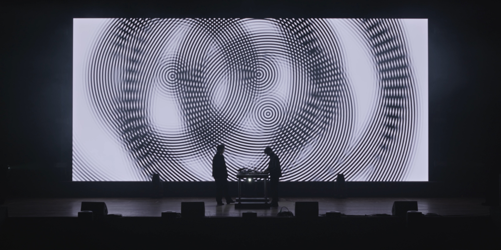
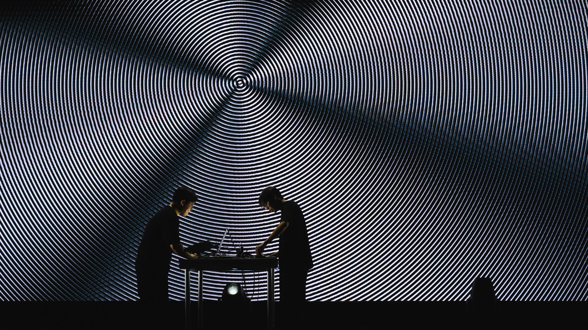
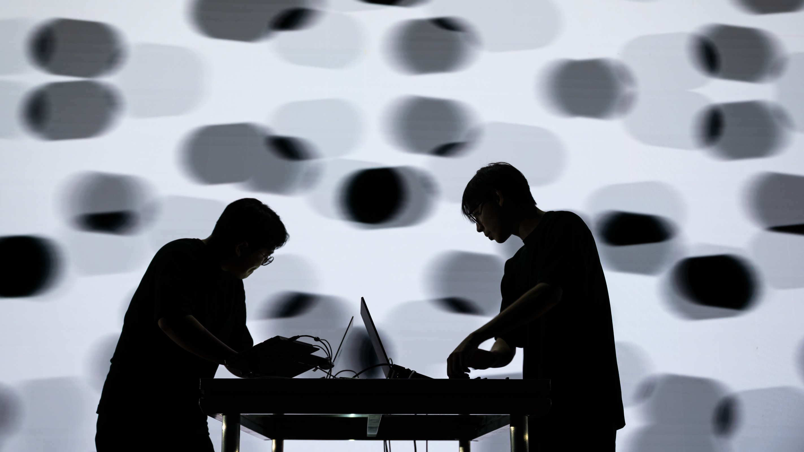
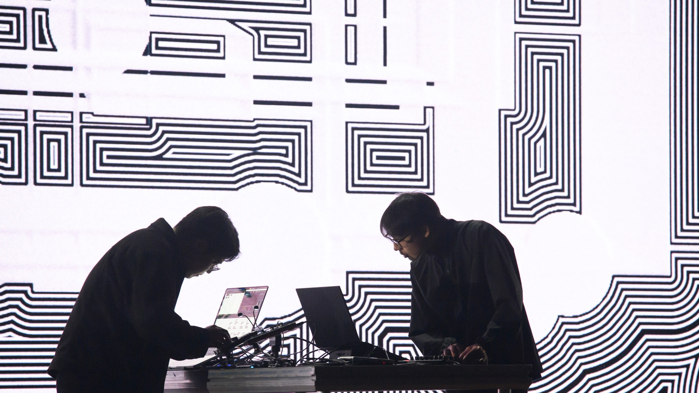
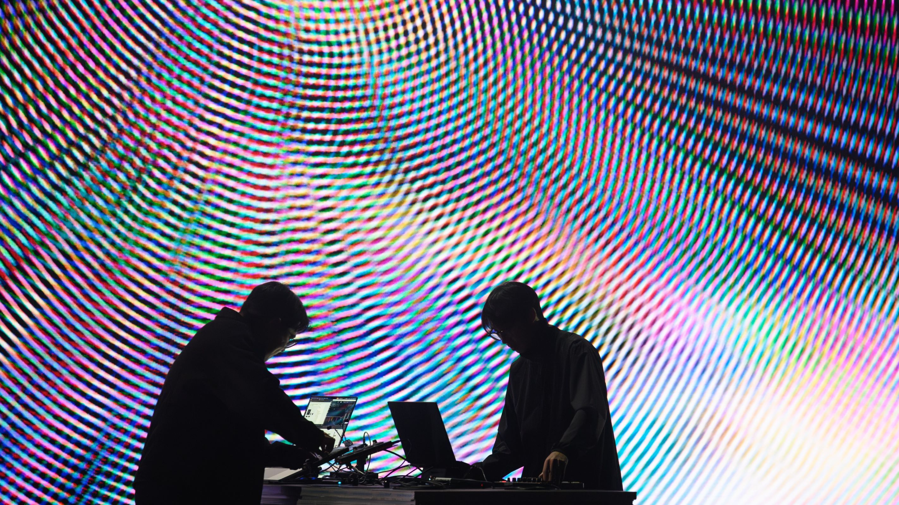
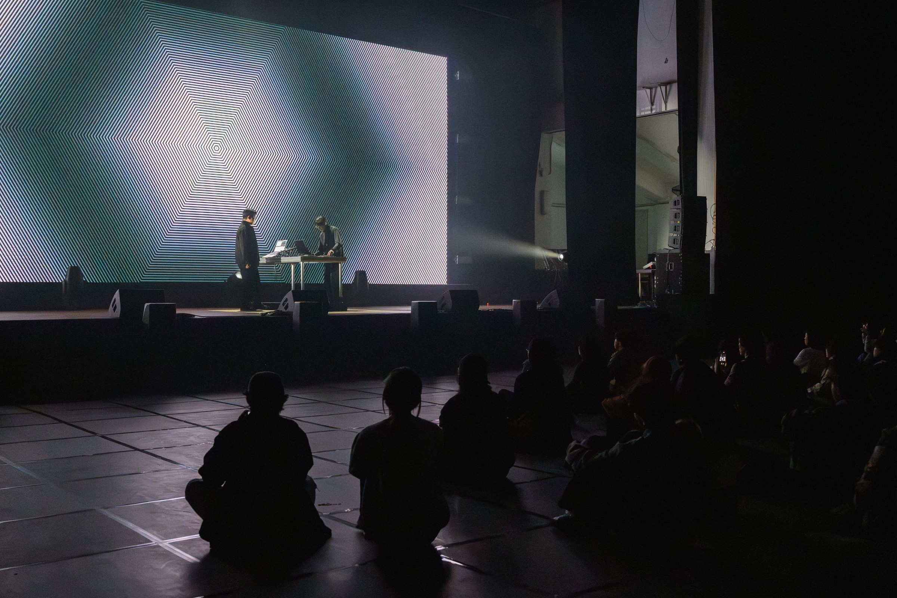

∫< Sense >*dt
Audio-Visual Live Performance
2025~
∫< Sense >*dt : Scattered Senses, Integrated World
By visual artist HUANG WEI and composer WONWOORI, explores sensory emergence the way vision and hearing create order out of chaos.
Is the world we see and hear truly real, or is it a construct of the mind?
The title is a metaphorical formula: sensory data < Sense > is filtered through time dt, convolved (*), and integrated ∫ into the seamless world we perceive.
More than a spectacle, this performance is an aesthetic and intellectual journey, inviting audiences to experience how perception itself is created in real time.
HUANG WEI employs transparent layers printed with simple geometric lines. Alone, they seem ordinary; but once overlapped and shifted, interference generates hypnotic Moiré patterns. The brain, following Gestalt principles, groups nearby lines into new visual structures, forming illusions beyond the material itself.
WONWOORI composes streams of fragmented tones divided between the ears. Faced with disjointed input, the brain refuses disorder, instead weaving pitches into a continuous melody absent from the original sound a striking auditory illusion.






Credits:
Visuals — HUANG WEI
Composer — WONWOORI
Photos and videos by Aquamarine Film
Presented at Taiwan Contemporary Culture Lab
Dates:
NOV. 1 2025: Clab Sound Festival